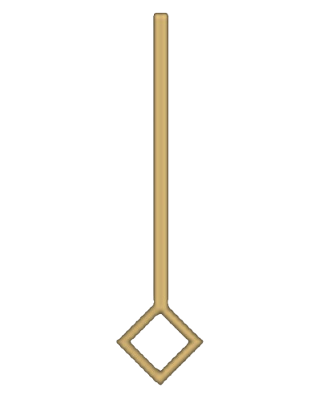

SAMSHARA
EL HIJO DE LA CATÁSTROFE
Desplaza para comenzar
SAMSHARA
EL HIJO DE LA CATÁSTROFE
Samshara nació en un tranquilo pueblo en las montañas del norte, donde el aire fresco
y la paz rodeaban su vida. Sus padres, campesinos humildes, trabajaban incansablemente
en la tierra, siempre buscando lo mejor para su pequeño hijo. La vida, aunque difícil,
se llevaba con esperanza. Los días eran largos, pero simples: amaneceres dorados, risas
familiares y una sensación de que el futuro les pertenecía. Todo eso cambió una sombría noche,
cuando la guerra descendió como una tormenta imparable.
El ejército invasor arrasó con todo a su paso, destruyó su hogar, su vida, y los sueños
de su familia. Los gritos de los caídos resonaron a través de las montañas, y el sonido
de los cascos de los invasores retumbó como un eco mortal. Samshara, solo un niño, se
escondió bajo los escombros, mientras el horror destruía su mundo.
El rugir de la guerra cesó como un suspiro agotado. El pueblo, ahora un campo de ruinas,
yacía en silencio, marcado por el eco de la destrucción. Samshara, su pequeño cuerpo cubierto
de polvo y la sangre de su gente, permaneció inmóvil entre los restos de su hogar.
No lloró. No hubo consuelo en su alma destrozada. En su mirada solo quedaba vacío, como
si incluso el dolor hubiera dejado de importar. Fue entonces cuando un sacerdote, caminando
entre la devastación, lo encontró. Al verlo, no vio un niño. Vio una sombra en forma humanoide,
perdida en el caos, pero también vio algo más: la chispa de una vida que aún no había sido
arrebatada por completo. Un alma que, aunque marcada por la tragedia, podría ser redimida.
El sacerdote lo llevó al templo de Helm, dios de la protección, donde Samshara fue acogido como un hijo.
A lo largo de los años, creció bajo su tutela, aprendiendo no solo las artes de la curación y
la fe, sino también el peso de lo que perdió. Se convirtió en un clérigo, un hombre que guiaba
a otros a la paz con la misma mano con la que había sido salvado. Pero el dolor nunca se desvaneció del todo.
Samshara avanza por el mundo con un propósito claro y firme: sanar las heridas de aquellos que sufren y
proteger a los más vulnerables. Cada paso que da está guiado por la memoria de sus padres y por la fe
que el sacerdote le brindó en su niñez. Con el corazón lleno de esperanza, busca inspirar a otros a
encontrar la paz en medio de la adversidad. Para él, cada acto de bondad es un homenaje a los que ya
no están, un recordatorio de que la luz puede siempre prevalecer, incluso tras la oscuridad de la guerra.